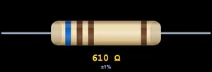
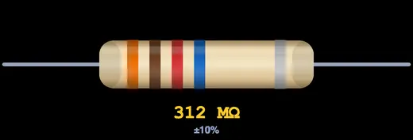
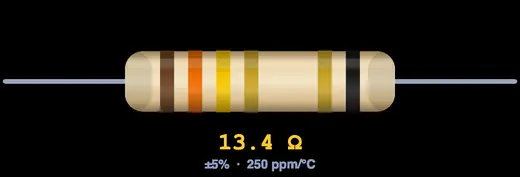

Resistor Color Code Calculator
Live Resistor • 3 / 4 / 5 / 6 Bands • Reverse Value→Bands • Tolerance & Temp-Co • E-Series Check • Practice & Quiz
1 Overview
This free, browser-based resistor color code calculator turns the colored bands on a resistor into a resistance value — and back again. Choose 3, 4, 5 or 6 bands, click a colour for each band on the live resistor diagram, and instantly read the resistance, tolerance, minimum / maximum range, temperature coefficient (6-band) and the nearest E-series preferred value.
It has four modes: Calculate (the main bands ↔ value tool), Explore (learn the colour chart, how to read resistors and the E-series), Practice (read random resistors at your own pace) and Quiz (a graded 5-question test with a star rating). Designed for electronics students, hobbyists, technicians and vocational trainees.
2 Getting Started

Pick a band count (4-Band is the most common) from the Bands selector. The resistor diagram updates with one column of colour swatches per band underneath it. Click a swatch to paint that band — the resistance readout at the top updates live. Press 🎲 Random to generate a random resistor, or use the 🔊 button to mute sound.
- The first digit bands accept black–white (0–9).
- The multiplier band adds gold (×0.1) and silver (×0.01) for sub-10 Ω values.
- The tolerance band offers brown, red, green, blue, violet, grey, gold, silver and none.
- Right-click (or long-press) the resistor for Save Image / Copy Reading / Reset.
3 Calculate Mode & Reverse Lookup
Bands → Value: the default direction. Click swatches and read the value. The readout badges show resistance, tolerance, the ± range, temperature coefficient (6-band only) and the closest standard E-series value with a tick when your value is an exact preferred value.
Press 🔢 Show Calculations for a step-by-step breakdown: significant digits, the multiplier, the tolerance range and the nearest standard value.
Value → Bands: use the Find Bands From Value bar. Type a number, pick the unit (mΩ–GΩ), choose a tolerance, and press Show Bands. The resistor and swatches update to the colour combination that produces that value for the current band count. If the value cannot be shown with the selected number of digits, a hint suggests switching band count.
4 Explore Mode
Explore is organised into five categories: Basics (what each band means), Color Chart (the full EIA digit / multiplier / tolerance / temp-co table), How To Read (step-by-step for 4, 5 and 6-band parts plus the gold-band trick), E-Series (E12 / E24 / E96 preferred values and why 4.7 kΩ exists) and Uses (real-world applications). Pick a category, then a topic card to read the detail with worked examples.
5 Practice & Quiz
Practice draws a random resistor and asks you to read its value — type the answer in the shown unit and press Check for instant feedback and a full worked solution. Your running score is tracked; go at your own pace with Next Problem.
Quiz gives 5 randomly chosen questions (reading values, identifying multiplier and tolerance bands, and gold/silver meaning) with instant grading and a final star rating. The readout badges are hidden in Practice and Quiz so answers are never given away.
6 Understanding the Code
The value is built as (significant digits) × (multiplier). For 4-band that is two digits; for 5 and 6-band, three digits. The multiplier is a power of ten (black = ×1, red = ×100, gold = ×0.1). The tolerance band gives the ± range, and the optional sixth band gives the temperature coefficient in ppm/°C.
Worked example — yellow, violet, red, gold: 4, 7, ×100, ±5% → 47 × 100 = 4700 Ω = 4.7 kΩ, range 4.47 kΩ to 4.94 kΩ.
7 Tips & Best Practices
- Find the tolerance band first — it is usually gold or silver and sits slightly apart from the others. Put it on the right and read left to right.
- If both ends look the same, the value is often a standard E-series number one way and a nonsense number the other — pick the sensible one.
- Sub-10 Ω resistors use a gold or silver multiplier; don't confuse it with the tolerance band.
- Use the nearest E-series badge to sanity-check a reading — real resistors almost always land on a preferred value.
- Temperature coefficient only matters for precision analog work; for most digital circuits any 6th band is fine.
Resistor Color Code Calculator — Read Any Resistor in Seconds
Every axial-lead resistor carries its value as a ring of coloured bands. This resistor color code calculator decodes them for you: choose the number of bands, click each colour on the live resistor, and read the resistance, tolerance and range instantly. It also works in reverse — type a value and it paints the bands. Whether you are reading a 4-band carbon-film resistor, a precision 5-band metal-film part, or a 6-band resistor with a temperature-coefficient ring, the decoding rule is the same.
What Each Band Means
Reading from the end opposite the tolerance band: the first bands are significant digits (two for 3 and 4-band, three for 5 and 6-band), followed by a multiplier band (a power of ten), a tolerance band, and — on 6-band parts — a temperature coefficient band measured in parts per million per degree Celsius (ppm/°C). The value is simply the digits read as a number, multiplied by the multiplier.
The EIA Resistor Color Code Chart
| Colour | Digit | Multiplier | Tolerance | Temp Co (ppm/°C) |
|---|---|---|---|---|
| Black | 0 | ×1 | — | 250 |
| Brown | 1 | ×10 | ±1% | 100 |
| Red | 2 | ×100 | ±2% | 50 |
| Orange | 3 | ×1k | — | 15 |
| Yellow | 4 | ×10k | — | 25 |
| Green | 5 | ×100k | ±0.5% | 20 |
| Blue | 6 | ×1M | ±0.25% | 10 |
| Violet | 7 | ×10M | ±0.1% | 5 |
| Grey | 8 | ×100M | ±0.05% | 1 |
| White | 9 | ×1G | — | — |
| Gold | — | ×0.1 | ±5% | — |
| Silver | — | ×0.01 | ±10% | — |
| None | — | — | ±20% | — |
How to Read a 4-Band Resistor
The 4-band resistor is the workhorse of through-hole electronics. Bands 1 and 2 are digits, band 3 is the multiplier, band 4 is tolerance. Take brown-black-red-gold: 1, 0, ×100 → 10 × 100 = 1000 Ω (1 kΩ) at ±5%. Hold the resistor so the gold (or silver) band is on the right, then read the other bands left to right. If you read it backwards you would get an absurd value, which is the clue you have it flipped.


How to Read 5-Band and 6-Band Resistors
Precision resistors add a third digit band for an extra significant figure. Brown-green-black-brown-brown reads 1, 5, 0, ×10, ±1% → 150 × 10 = 1500 Ω (1.5 kΩ) at ±1%. A 6-band resistor is read exactly the same for the first five bands; the sixth band adds the temperature coefficient — brown = 100 ppm/°C means the value changes by up to 0.01% for every degree of temperature change. This matters in precision references and instrumentation but rarely in everyday digital circuits.
E-Series Preferred Values — Why 4.7 kΩ?
Resistors are not made in every possible value. They follow the E-series of preferred values: E12 (10% steps, 12 values per decade), E24 (5%, 24 values), and E96 (1%, 96 values). The familiar numbers — 4.7 kΩ, 2.2 kΩ, 3.3 kΩ, 1 kΩ — are E12/E24 values, spaced so that their tolerance bands just touch with no gaps and no overlap. The calculator's nearest E-series badge tells you whether a decoded value is a real catalogue part, which is a quick way to catch a mis-read band.
Worked Examples
| Bands | Calculation | Value |
|---|---|---|
| Yellow-Violet-Red-Gold | 47 × 100 | 4.7 kΩ ±5% |
| Brown-Black-Black-Gold | 10 × 1 | 10 Ω ±5% |
| Red-Red-Brown-Gold | 22 × 10 | 220 Ω ±5% |
| Brown-Black-Green-Gold | 10 × 100k | 1 MΩ ±5% |
| Green-Blue-Black-Brown-Brown | 560 × 1 | 560 Ω ±1% |
Who Uses This Simulator?
This tool is used by electronics and electrical engineering students learning to identify components, hobbyists and makers stocking a parts drawer, technicians and repair engineers reading values off a board, and vocational instructors teaching component identification. It pairs naturally with circuit analysis: once you know a resistor's value, drop it into a circuit and see what it does.
Explore Related Simulators
Once you can read a resistor, put it to work: try the Ohm’s Law & DC Circuits simulator to see how resistance sets current, the RC Circuit simulator for resistor–capacitor timing, the Kirchhoff’s Law solver for multi-loop networks, the Capacitor Bank designer, the Wheatstone Bridge simulator for precision resistance measurement, and the Electrical Wiring Simulator & Trainer to wire real switches, sockets and cables.